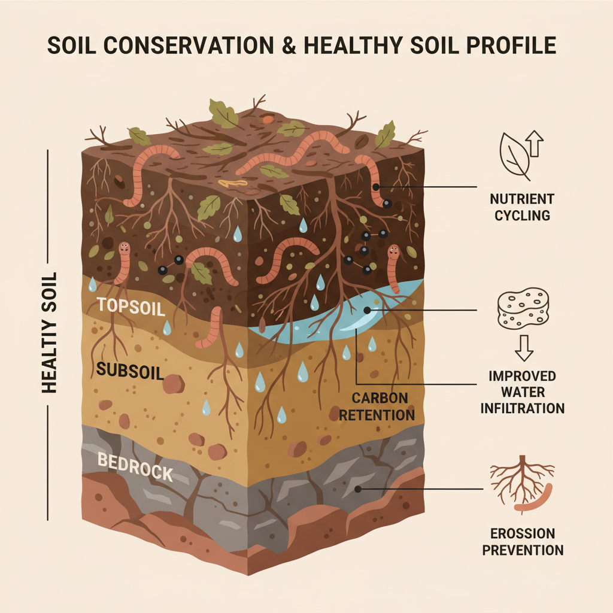

Unreliable and generalized weather forecasts
Most farmers receive broad regional forecasts that do not reflect village-level realities, leading to mistimed planting and crop failure.

Lack of early warning for extreme events
Floods, droughts, heatwaves, and storms often strike without notice, leaving farmers unprepared and exposed to devastating losses.

Limited access to seasonal climate insights
Farmers rarely receive advance information about delayed rains or shortened seasons, affecting crop choice and financial planning.

Low climate literacy and actionable guidance
Even when climate data exists, it is often technical and inaccessible, preventing farmers from turning information into action.